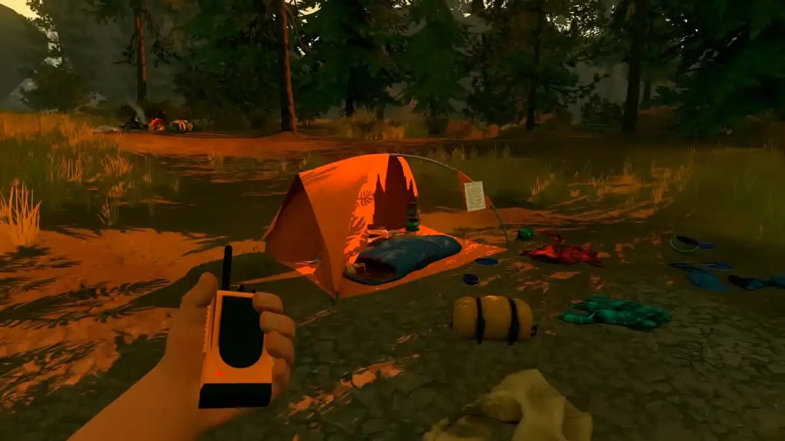
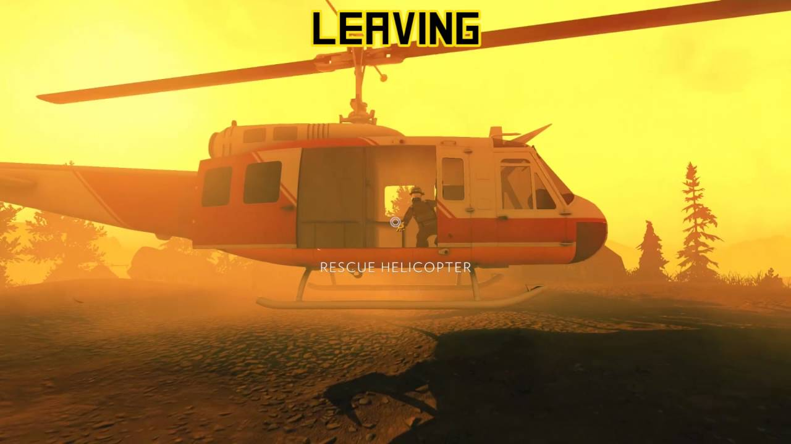
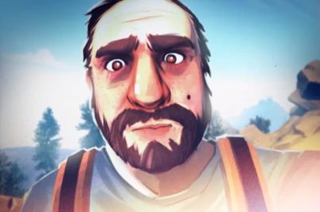
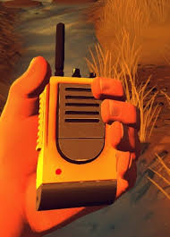
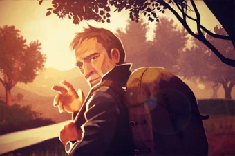
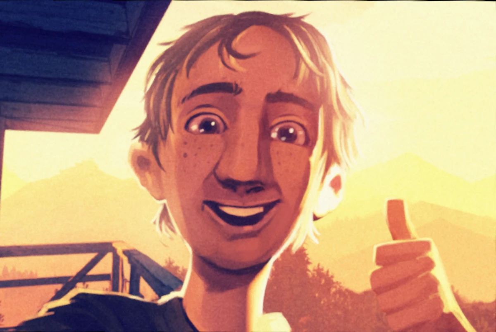
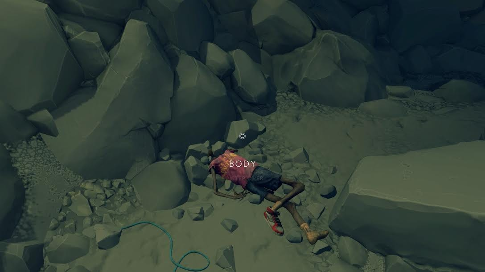

Firewatch is a first-person mystery adventure game developed by Campo Santo and published in February 2016. It arrived like a forest fire.
You play as Henry, a man running away from a life that has grown too heavy to carry. He takes a summer job as a fire lookout in the Shoshone National Forest in Wyoming — isolated, unreachable, alone with his thoughts and a two-way radio that connects him to his new supervisor/boss, Delilah.
The game unfolds over the course of a summer. No combat. No enemies (thats what you think). Just you, the wilderness, and a voice on the radio that slowly becomes the most important relationship in your life.
Then things begin to feel wrong.
02
Chapter II
The Story — From Prologue to Wildfire
✦
Firewatch does not beggin with gameplay, but with text. A series of choices that narrate Henry's life before he run away. how he met his wife, Julia, at a bar, how they fell in love, how she nedeed a dog and childs, and how she was diagnosed with early-onset dementia, and how he — unable to understand the universe — fled to the wilderness. It is a gut-punch of an introduction, and it arrives before you've even touched the game.
You are a man who has run away from his life. The forest doesn't care why. It is patient, and ancient, and it has seen everything that humans do to each other and to themselves.
— Henry when come to Wyoming
Day-by-Day: The Story Unfolds
Day 1 — Arrival
Henry arrives at his fire lookout tower in Shoshone National Forest. He meets Delilah via radio for the first time, and settles in. Everything feels heavy. Quiet. Good.
First Weeks — Two Voices
Henry and Delilah begin building a relationship over the radio. It is warm and, sometimes, flirtatious. They share their days, their histories, their jokes. The relationship feels real in a rare way.
The Girls — First Incident
Henry meet two teenage girls camping where they shouldn't be, and he confronts them. Later, their camp is found violently destroyed — equipment shattered, tent ripped apart. No sign of the girls. (Does Henry really is who we think he is?)

The Fence — Someone is Watching
Henry discovers a section of the park that doesn't appear on any map. Strange equipment. Strange sounds. Someone has been there recently.(Or does Henry started becoming crazy?)
The Cache — Evidences
Henry discovers he is being watched. someone has been monitoring his radio conversations with Delilah. Transcripts. Personal notes. The paranoia becomes justified — and the mystery starts.
The Ending — Everything Burns
A massive fire breaks out across the forest. Evacuation orders are issued. Henry and Delilah escape via helicopter and boat respectively — but they don't meet. They say goodbye over the radio as the forest burns behind them. They may never see each other. Henry must go back to his wife Julia. To his real life. The ending is not a answear. It is an acceptance.

Voices in the Wilderness
The relationship between Henry and Delilah is carried entirely through radio dialogue. These are some of the most memorable exchanges:
Delilah:
"You know what I think? I think you're the only interesting thing that's happened to me all summer. That's not a compliment. That's a cry for help."
Henry:
"I came here to be alone."
[long pause]
"I think I'm not very good at it."
Delilah:
"This is what I know about you, Henry. You love your wife. You're lonely. You make terrible jokes when you're nervous. And you're out here for the same reason I am — because it's easier to be alone than to try and not be."
What the Story Is Really About
Firewatch is not a mystery story wearing an emotional costume. It is an emotional story wearing a mystery costume. It's not a firewatcher game (sorry if this job doesnt exist teather), its about decisions.
03
Chapter III
The Characters
✦

Henry
The Player
Henry loves Julia deeply, but he cannot watch her disappear, so he runs instead. He is self-depressive, anxious, and lazy, but sometimes funny and lovable, like a big and fat panda.

Delilah
Supervisor — Two Towers South
Delilah is Henry's supervisor, and, sometimes, something closer to his best friend. She has been running from her own past for longer than Henry has.
Julia
Henry's Wife — Absent but Present
Julia never appears. She referenced, felt. But she is everywhere in the game and in every choice Henry makes. Her sickness has taken pieces of her that will not return. Henry's love for her is the emotional core of everything.

Ned Goodwin
The Ghost in the Forest
Ned is the great mystery of the game. A firefighter who disappeared, unabble to face the worl, after his son died in a climbing accident.

Brian Goodwin
Ned's Son — The Tragedy
Brian is the Ned's son. A boy who loved climbing and exploring, who died in an accident. His death is what broke Ned and sent him into crazyness.

Kid's body
The little adventurer.
A body found in a deep cave that appears to be Ned Goodwin's little boy. That's make us undesrtand why Ned become crazy, and, at a moment, feel sad for him.
Shoshone National Forest — Summer, 1988
04
Chapter IV — Personal
My Connection to Firewatch all the games
♥
Firewatch
Firewatch is not a game I talk about often.
It's the kind of game you keep to yourself a little,
like a place you found and don't want to share too nobody,
because something about it belongs to the version of you that found it, and makes the version of you that you became after all.
Slime Rancher (1 and 2)
Slime rancher... what an idiot game, it's so dumb and nonsense, but if taking care of slimes teatch me someting,
are that in some moments of your life, you will need to choose... Choose betwen two paths. The life is too much for a little bit of time.
Red Dead Redemption 2
No such a word to describe this, one more game about decisions (and redemption of this decisions), connections, and things in life that you will never have time to do. But it's controversial, because wuen you become afraid, the game teatches you that "it's nothing to be afraid of".
Elden Ring
My favorite game? It's not too simple to say. But Elden Ring is a important part of me and my life, once it's the first game i became abble to play on my first videogame. Thats such an achievement to little me. like in The Little Prince dedication once said: "all gtown-up were children first, but only few of then does remember that.", so, even playing for the first time as an "grown-up", this game was important to me, when I was a child.
Go Back to the World
The fire has burned through. The radio is silent. The forest is still standing — older than you, indifferent to you, beautiful without your permission. You came here to hide. You are leaving changed.
That is what Firewatch does. That is why it matters.